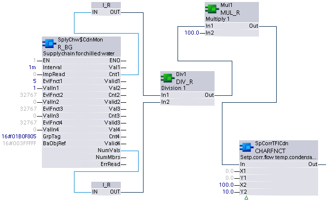

R_BG：读取二进制组
R_BG 绑定到组管理器对象，该对象控制从特定组数据标签的多个数据点连续收集组数据（当前值/状态标志对）。此外，组管理器对象会触发配置的评估函数来计算结果值。 R_BG 以预先配置的时间间隔定期读取评估结果。读取也可以从外部源触发。
R_BG 可配置为根据可选评估函数提供多个（最多四个）评估结果值。必须至少配置一个评估函数。
分组基础设施需要专有对象：一个组管理者对象和一个或多个组成员对象。各个成员数据点通过组成员对象进行分组和引用，并且收集数据并将其从组成员对象传递到组管理器对象。
Compatible data points:
- Binary input [BI]
- Binary output [BO]
- Binary calculated value [BCalcVal]
- Binary configuration value [BCnfVal]
- Binary process value [BPrcVal]
参考data point objects有关 BACnet 数据点的详细说明。
Required properties of grouped data points:
- Present value
- State flag
Pin description (inputs)
BaObjRef | |
|---|---|
BA-Object reference 结构 [BaObjRef] 定义 XFB 和 BACnet 对象之间的绑定连接。绑定会自动发生。 手动配置尝试是不必要的，并且可能会导致系统错误。 | |
DeviceId | 设备标识符 双字（默认值：16#3FFFFF） [DeviceId] 在单个标识符中包含对象类型和对象实例。 它用于识别设备对象：本地或远程。本地设备对象也可以通过值 16#3FFFFF 来标识。 |
ObjectId | 对象标识符 双字（默认值：16#3FFFFF） [ObjectId] 在单个标识符中包含对象类型和对象实例。 它用于识别设备内的对象。 |
ItemId | 物品标识符 整数（默认值：-1） [ItemId] 表示功能视图节点对象中的项目索引，它引用 BACnet 对象。 [ObjectId] 和 [ItemId] 一起定义对 BACnet 对象的间接访问引用。 值-1表示使用直接绑定。 |
GrpTag |
|---|
Group data tag 双字（默认值：0） [GrpTag] 定义由 XFB 收集和评估的特定组数据（当前值、状态标志）。 系统提供预定义的标签以及用户可定义的标签。 [GrpTag] 通常由应用程序开发人员在 CFC 中设置，并且在运行时不得更改。必须将其设置为与 XFB 的数据类型匹配的标记。 |
间隔 |
|---|
Read interval TIME（默认值：T#0D_0H_0M_15S_0MS） 可参数化的轮询时间，指定读取计算结果的频率。 值为 0 将禁用计时器。在这种情况下，可以使用 [ImpRead] 从外部源触发评估结果的读取。 如果Interval引脚设置了值-1s，则评估结果的读取由FW触发。当评估结果新更新时，FW 设置读取触发。 （如果“LastUpdated”评估函数被参数化，则Interval应设置为-1s。） |
ImpRead |
|---|
Impulse for read 布尔值（默认值：False） 一个可链接的引脚，允许外部源提供数字脉冲以启动读取操作。 由于[ImpRead]可以连线，因此可以同步多个XFBs的读取操作以收集在单个图表中。 Note |
EvlFnct1...4 | |
|---|---|
Evaluation function 1 整数（默认值：32767） [EvlFnct1] 确定对来自共享公共 [GrpTag] 的所收集组数据的有效当前值执行的操作类型。 [EvlFnct1] 属于四个输入集之一，每个输入集包含 [EvlFnctX] 和 [ValInX]。它通常由应用工程师在 CFC 中设置，并且不得在运行时更改。 如果未配置，[EvlFnct1] 默认设置为 MaxInt (32767)。在这种情况下，评估功能被禁用并且 [Valid1] 为 0 (False)。 [EvlFnct2]...[EvlFnct4] 功能与 [EvlFnct1] 相同。 | |
5: CountOfVal | 特定组中给定 [GrpTag] 满足 [ValIn1] 提供的可选参数的有效当前值的数量。结果设置到输出引脚 [Cnt]。 |
6: AND | 针对特定组中给定 [GrpTag] 的所有有效当前值的逻辑 AND 运算。 |
7: OR | 针对特定组中给定 [GrpTag] 的所有有效当前值的逻辑 OR 运算。 |
10：最后更新 | 在所有有效当前值中搜索特定组的给定组数据标签的最后更新值。 |
ValIn1...4 |
|---|
Value input 1 布尔值（默认值：False） 评估函数的可参数化参数，为给定 [GrpTag] 收集的数据设置所需的匹配值。仅当 [EvlFnct1] 设置为 5 (CountOfVal) 时才会对其进行处理。 [ValIn1] 属于四个输入集之一，每个输入集包含 [EvlFnctX] 和 [ValInX]。它通常由应用工程师在 CFC 中设置，并且不得在运行时更改。 [ValIn2]...[ValIn4] 功能与 [ValIn1] 相同。 |
Pin description (outputs)
值1...4 |
|---|
Value 1 布尔值（默认值：False） 基于[EvlFnct1]中选择的评估函数评估的结果值。 [Val1] 属于四个输出集之一，每个输出集包含 [ValX]、[ValidX] 和 [CntX]。
[Val2]...[Val4] 功能与 [Val1] 相同。 |
有效1...4 | |
|---|---|
Valid 1 布尔值（默认值：False） 根据[EvlFnct1]的选择，[Valid1]指示[Val1]或[Cnt1]是否可靠。 [Valid1] 属于四个输出集之一，每个输出集包含 [ValX]、[ValidX] 和 [CntX]。 [Valid2]...[Valid4] 功能与 [Valid1] 相同。 | |
1（正确） | 如果给定 [GrpTag] 的组数据中至少有一个当前值有效，则 [Val1] / [Cnt1] 是可靠的。 |
0（假） | 如果给定 [GrpTag] 的组数据中的当前值均无效，则 [Val1] / [Cnt1] 不可靠。 |
碳纳米管1...4 |
|---|
Count 1 整数（默认值：0） 基于 [EvlFnct1] 中选择的 CountOfVal 评估函数评估的结果值。 [Cnt1] 属于四个输出集之一，每个输出集包含 [ValX]、[ValidX] 和 [CntX]。 [Cnt1] 将交付：
[Cnt2]...[Cnt4] 功能与 [Cnt1] 相同。 |
UpdInd1...4 |
|---|
Update indication 布尔值（默认值：False） [UpdInd] 表示自上次执行 XFB 以来，评估中考虑的至少一个当前值已被更新。 [UpdInd] 仅当 Valid 为 true 时才会设置为 true。 [UpdInd] 使用更新计数属性（如果存在）。这使得在新值与先前值相同的情况下可以将值识别为已更新。对于没有更新计数的对象，[UpdInd] 切换当前值的更改。 Note |
NumVals |
|---|
Number of valid values 整数（默认值：0） 为特定 [GrpTag] 收集的有效现值样本的数量。 |
NumMbrs |
|---|
Number of aggregated members 整数（默认值：0） 已为特定[GrpTag]收集的现值样本的数量，通常等于由特定组的组管理器对象寻址的组成员对象的数量。 |
ErrRead | |
|---|---|
Error while reading 整数（默认值：20） 最后一次 XFB 读取尝试的状态。 如果无法评估有效的 Val，[ErrRead] 指示在给定 [GrpTag] 收集的数据上检测到的第一个错误。 | |
= 0 | 没有错误。 |
> 0 | 错误，请参阅XFB error codes. |
Use case examples
NOTICE

Note
图形反映了 XFB 实现的示例；有关 CFC 的当前示例，请参阅 ABT。
R_BG:示例取自中央供应函数 AFN 和 CHT{SplyChw01}。由于图形大小的限制，功能块可能会丢失或显示得比典型的更紧密地分组。
